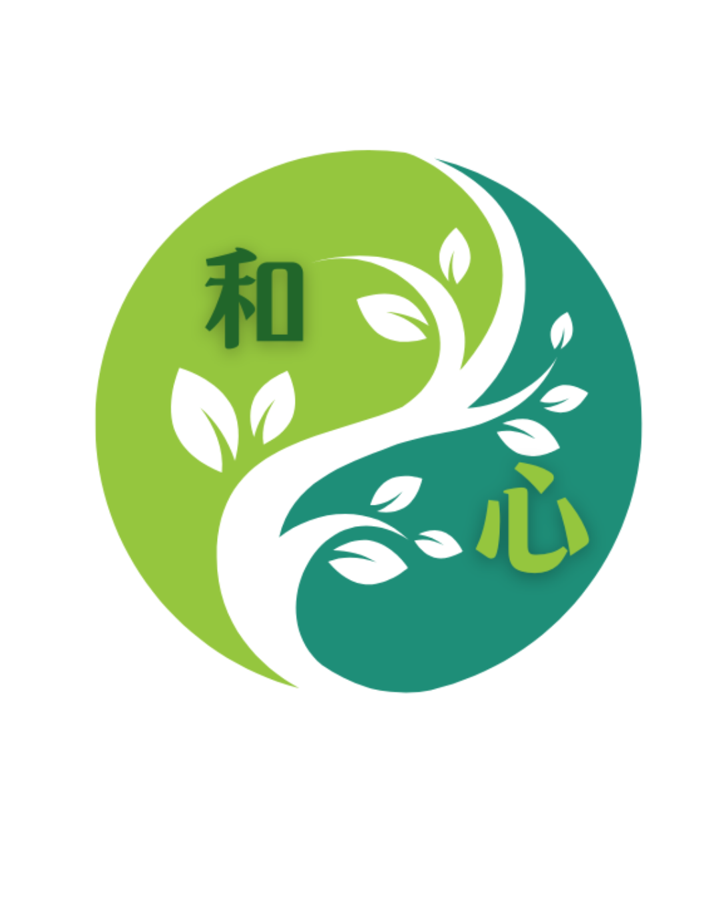

<!doctype html>
<html lang="ja">
<head>
<meta charset="utf-8">
<meta name="viewport" content="width=device-width,initial-scale=1,viewport-fit=cover">
<meta name="theme-color" content="#6e7d64">
<title>和心｜あなたに合う学び・鑑定診断</title>
<style>
:root{
  --ink:#302f2b; --muted:#6f6b63; --gold:#9b7a42; --cream:#f7f2e6;
  --sage:#6e7d64; --sage2:#eef1e9; --white:#fff; --line:#d8c8a6;
}
*{box-sizing:border-box}
body{
  margin:0;
  background:
    radial-gradient(circle at 10% 0%, rgba(255,255,255,.95), transparent 35%),
    linear-gradient(150deg,#f8f4ea,#edf1e9);
  color:var(--ink);
  font-family:-apple-system,BlinkMacSystemFont,"Hiragino Sans","Yu Gothic","Yu Mincho",serif;
}
.shell{max-width:540px;margin:0 auto;min-height:100vh;padding:20px 16px 38px}
.card{
  background:rgba(255,255,255,.94);
  border:1px solid var(--line);
  border-radius:26px;
  padding:26px 20px;
  box-shadow:0 14px 40px rgba(62,52,35,.08);
}
.logo{text-align:center;margin-bottom:8px}.logo img{width:118px;height:118px;object-fit:contain;border-radius:50%;box-shadow:0 8px 24px rgba(46,93,73,.10)}
.brand{text-align:center;color:#1f6f62;font-weight:800;letter-spacing:.12em;font-size:14px}
h1{font-size:28px;line-height:1.5;text-align:center;margin:10px 0 12px}
.lead{text-align:center;line-height:1.9;color:var(--muted);margin:0 0 18px}
.kicker{
  display:inline-block;border:1px solid #d8c8a6;border-radius:999px;
  padding:6px 11px;font-size:12px;color:#735d35;background:#fffaf0
}
.center{text-align:center}
.progress{height:7px;background:#eee9df;border-radius:999px;overflow:hidden;margin:18px 0 22px}
.bar{height:100%;background:linear-gradient(90deg,#1f8a78,#95c93d);transition:width .25s}
.question{font-size:21px;line-height:1.55;font-weight:700;margin:8px 0 16px}
.choice{
  width:100%;display:block;padding:15px 14px;margin:10px 0;background:#fff;
  border:1px solid #cfc3aa;border-radius:16px;font-size:15px;line-height:1.55;
  color:var(--ink);text-align:left;cursor:pointer
}
.choice:hover{background:#faf6ed;border-color:var(--gold)}
.primary{
  width:100%;border:0;border-radius:16px;background:linear-gradient(135deg,#1f8a78,#75a92d);color:white;
  padding:16px;font-size:16px;font-weight:700;cursor:pointer
}
.secondary{
  width:100%;border:1px solid #cfc3aa;border-radius:16px;background:#fff;color:var(--ink);
  padding:14px;font-size:15px;font-weight:600;cursor:pointer;margin-top:10px
}
.result-title{font-size:26px;line-height:1.5;color:#526149;margin:8px 0}
.price{font-size:19px;font-weight:800;color:#755a2e;margin:5px 0 12px}
.box{background:var(--cream);border-radius:16px;padding:16px;margin:15px 0;line-height:1.85}
.box.sage{background:var(--sage2)}
.subhead{font-size:15px;font-weight:800;color:#5f523c;margin-bottom:5px}
ul{padding-left:20px;line-height:1.8}
.small{font-size:12px;line-height:1.75;color:#777}
.hr{border:0;border-top:1px solid #e7ded0;margin:22px 0}
.alt{
  border:1px solid #ded4c1;border-radius:17px;padding:15px;margin-top:15px;background:#fff
}
.alt b{color:#526149}
.badge{display:inline-block;background:#f0eadc;color:#725d36;border-radius:999px;padding:5px 9px;font-size:12px}
.notice{font-size:13px;line-height:1.8;color:#6f6b63}
footer{text-align:center;color:#888;font-size:11px;margin-top:14px;line-height:1.7}
</style>
</head>
<body>
<main class="shell">
  <section class="card" id="app"></section>
  <footer>命をつなぐお茶の学校「和心」<br>サービス選びのための簡易診断</footer>
</main>

<script>
/*
  公開時は下の4つのURLだけ差し替えれば完成です。
  LINE_URL は公式LINEの友だち追加／相談URL。
  各 PRODUCT_URL は詳細・申込ページURL。
*/
const LINKS={
  LINE_URL:"https://lin.ee/ZCvVZkp",
  tea:"https://docs.google.com/forms/d/e/1FAIpQLScbLwshcIPHjrK75Hqz_ZnQ1sHpjeTOXJjGeyrZltrEHH-o9Q/viewform?usp=header",
  numerology:"https://docs.google.com/forms/d/e/1FAIpQLScKPvJRzVEwu20d9bxFRxFYQYAQuEdQlC76dihs3RloIG_iog/viewform?usp=header",
  reading:"https://docs.google.com/forms/d/e/1FAIpQLSeEM8Z-brVcEMlVWOaXtNMvf2Nn89ee1-dluAAYHuMHwi8lQg/viewform?usp=header",
  premium:"https://docs.google.com/forms/d/e/1FAIpQLSeEM8Z-brVcEMlVWOaXtNMvf2Nn89ee1-dluAAYHuMHwi8lQg/viewform?usp=header"
};

const products={
  tea:{
    name:"薬膳茶調合士スターター講座",
    price:"49,800円",
    tag:"健康を自分で守る学び",
    desc:"基礎講座6か月＋茶材キット付き。薬膳茶や養生の基礎を学び、日々の体調に合わせて自分や家族のためのお茶を選べる力を育てます。",
    good:["自分や家族の健康管理に役立つ知識がほしい","薬膳茶を基礎から体系的に学びたい","知識だけでなく茶材を使って実践したい"],
    not:["短時間の個別鑑定だけを受けたい方","数秘術を仕事として学ぶことが第一目的の方"],
    reason:"「自分の健康は自分で守りたい」「暮らしの中で実践できる知識を身につけたい」という回答が強く表れました。"
  },
  numerology:{
    name:"数秘術講座",
    price:"初級10,000円／中級20,000円／上級30,000円\n初級〜上級セット 49,800円",
    tag:"人を鑑定する力を育てる",
    desc:"数秘術を段階的に学び、自分を読むだけでなく、人の個性・可能性・人生の流れを鑑定できる力を身につけたい方のための講座です。",
    good:["数秘術を体系的に学びたい","将来、人を鑑定できるようになりたい","学びを仕事や活動に活かしたい"],
    not:["まずは自分自身の鑑定だけを受けたい方","薬膳茶の基礎を中心に学びたい方"],
    reason:"「学んだ知識を人のために役立てたい」「鑑定できる力を身につけたい」という方向性が最も強く表れました。"
  },
  reading:{
    name:"数秘薬膳茶鑑定",
    price:"初回モニター 2,200円／Zoom 60分 6,500円",
    tag:"まず自分を知り整える",
    desc:"数秘術と薬膳の視点を組み合わせ、今の自分を知るための個別セッション。Zoom60分コースには数秘薬膳茶が付きます。",
    good:["今の自分の性質や方向性を知りたい","心と体を両方の視点から見つめたい","まずは個別セッションを体験したい"],
    not:["人を鑑定する資格・技術を学ぶことが目的の方","6か月かけて薬膳茶を基礎から学びたい方"],
    reason:"「まず自分自身を理解したい」「今の自分に合うヒントを受け取りたい」という回答が中心でした。"
  },
  premium:{
    name:"プレミアムZoomセッション",
    price:"90分 12,500円",
    tag:"人生を深く読み解く",
    desc:"数秘術の深掘り鑑定と数秘薬膳茶10日分を組み合わせた90分の個別セッション。人生・心・体をじっくり見つめたい方へ。",
    good:["今後の人生や方向性を深く整理したい","短い鑑定ではなくじっくり話したい","数秘術の深掘りと薬膳茶の両方を受け取りたい"],
    not:["まずは低価格で気軽に試したい方","人を鑑定するための学習が目的の方"],
    reason:"「人生全体を深く見つめたい」「丁寧な個別サポートを受けたい」という回答が強く表れました。"
  }
};

const questions=[
  {q:"今、一番叶えたいことは？", a:[
    ["自分や家族の健康を守れる知識を身につけたい",{tea:4}],
    ["まず自分自身を知り、心と体を整えたい",{reading:4,premium:1}],
    ["数秘術を学び、人を鑑定できるようになりたい",{numerology:5}],
    ["人生全体を深く見つめ、今後を整理したい",{premium:5,reading:1}]
  ]},
  {q:"学ぶ・受けるなら、どんな形が合っていますか？", a:[
    ["数か月かけて、基礎から実践まで学びたい",{tea:4,numerology:2}],
    ["まずは気軽に個別鑑定を受けたい",{reading:5}],
    ["段階的に専門技術を身につけたい",{numerology:5}],
    ["時間をかけて深く個別に見てもらいたい",{premium:5}]
  ]},
  {q:"健康について、今の考えに近いものは？", a:[
    ["自分の健康は自分でも守れるようになりたい",{tea:5}],
    ["体だけでなく心や生き方も一緒に見つめたい",{reading:3,premium:3}],
    ["健康より、まず数秘術の技術習得に関心がある",{numerology:4}],
    ["自分に合う方法を個別に提案してほしい",{reading:3,premium:3}]
  ]},
  {q:"数秘術に一番求めていることは？", a:[
    ["自分の性質を知るきっかけにしたい",{reading:5}],
    ["人生の流れや課題まで深く読み解いてほしい",{premium:5}],
    ["自分でも学んで、人を鑑定できるようになりたい",{numerology:6}],
    ["数秘より薬膳茶や養生を中心に学びたい",{tea:5}]
  ]},
  {q:"半年後、どうなっていたら嬉しいですか？", a:[
    ["体調や季節に合わせてお茶を選べる",{tea:5}],
    ["自分への理解が深まり、心が軽くなっている",{reading:4,premium:2}],
    ["家族や友人を数秘で読み解けるようになっている",{numerology:5}],
    ["人生の方向性が整理され、自分らしく進めている",{premium:5}]
  ]},
  {q:"今のあなたに一番しっくりくる言葉は？", a:[
    ["学ぶなら、暮らしで使えるものがいい",{tea:4}],
    ["まずは一度、自分を見てもらいたい",{reading:5}],
    ["学びを将来の仕事・活動につなげたい",{numerology:5}],
    ["自分の人生を丁寧に見つめ直したい",{premium:5}]
  ]}
];

let step=-1, scores={tea:0,numerology:0,reading:0,premium:0};
const app=document.getElementById("app");

function home(){
  app.innerHTML=`
    <div class="logo"></div>
    <div class="brand">命をつなぐお茶の学校「和心」</div>
    <h1>60秒でわかる<br>あなたに合う「和心」診断</h1>
    <p class="lead">心と体の健康、これからの人生、そして学び。<br>
    6つの質問から、今のあなたに合う<br>講座・鑑定をご案内します。</p>
    <div class="center"><span class="kicker">全6問・約60秒</span></div>
    <div style="height:18px"></div>
    <button class="primary" onclick="start()">診断をはじめる</button>
    <p class="small" style="margin-top:16px">※医療上の診断ではありません。和心の講座・セッションを選ぶための簡易ナビゲーションです。</p>`;
}

function start(){
  step=0;scores={tea:0,numerology:0,reading:0,premium:0};showQuestion();
}
function showQuestion(){
  const item=questions[step];
  app.innerHTML=`
    <div class="brand">和心診断</div>
    <div class="progress"><div class="bar" style="width:${((step+1)/questions.length)*100}%"></div></div>
    <div class="center"><span class="kicker">QUESTION ${step+1} / ${questions.length}</span></div>
    <div class="question">${item.q}</div>
    ${item.a.map((x,i)=>`<button class="choice" onclick="choose(${i})">${x[0]}</button>`).join("")}
    <p class="small center">考えすぎず、今の気持ちに一番近いものを選んでください。</p>`;
}
function choose(i){
  const pts=questions[step].a[i][1];
  Object.entries(pts).forEach(([k,v])=>scores[k]+=v);
  step++;
  if(step<questions.length) showQuestion(); else showResult();
}
function urlFor(k){
  if(LINKS[k]) return LINKS[k];
  return "";
}
function go(url,what){
  if(url){window.open(url,"_blank","noopener,noreferrer")}
  else{
    alert(what+"のリンクを設定すると、ここから直接お申込み・ご相談へ進めます。");
  }
}
function showResult(){
  const ranking=Object.entries(scores).sort((a,b)=>b[1]-a[1]);
  const key=ranking[0][0], altKey=ranking[1][0];
  const p=products[key], alt=products[altKey];
  const pct=Math.round(ranking[0][1]/Math.max(1,ranking.reduce((s,x)=>s+x[1],0))*100);
  app.innerHTML=`
    <div class="logo"></div>
    <div class="brand">診断結果</div>
    <div class="center" style="margin-top:8px"><span class="badge">${p.tag}</span></div>
    <h2 class="result-title">${p.name}</h2>
    <div class="price">${p.price.replace("\n","<br>")}</div>

    <div class="box sage">
      <div class="subhead">この結果になった理由</div>
      ${p.reason}
    </div>

    <p style="line-height:1.9">${p.desc}</p>

    <div class="box">
      <div class="subhead">こんな方におすすめ</div>
      <ul>${p.good.map(x=>`<li>${x}</li>`).join("")}</ul>
    </div>

    <div class="box">
      <div class="subhead">このサービスが第一選択ではない方</div>
      <ul>${p.not.map(x=>`<li>${x}</li>`).join("")}</ul>
    </div>

    <button class="primary" onclick="go('${urlFor(key)}','詳細・申込み')">このサービスを詳しく見る</button>
    <button class="secondary" onclick="go('${LINKS.LINE_URL}','公式LINE')">公式LINEで相談する</button>

    <div class="alt">
      <span class="badge">次に相性がよい選択肢</span><br>
      <b>${alt.name}</b><br>
      <span class="small">${alt.tag}</span>
    </div>

    <hr class="hr">
    <button class="secondary" onclick="home()">もう一度診断する</button>

    <p class="notice" style="margin-top:18px">
      ※本診断は疾病の診断・治療を目的とするものではありません。
      症状がある場合や体調に不安がある場合は、医療機関または医療専門職へご相談ください。
    </p>`;
}
home();
</script>
</body>
</html>